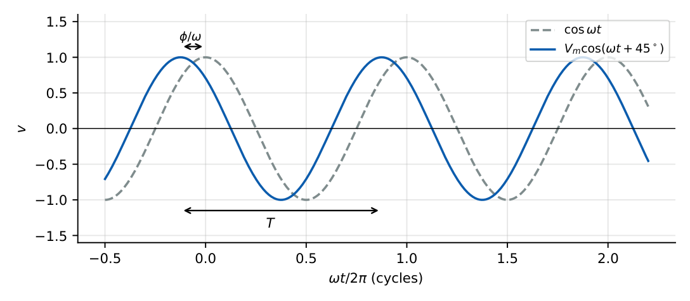
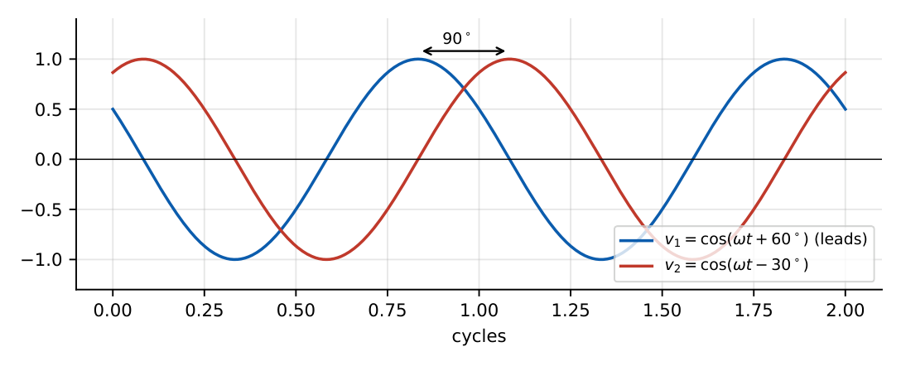
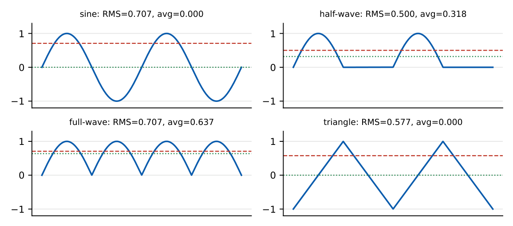
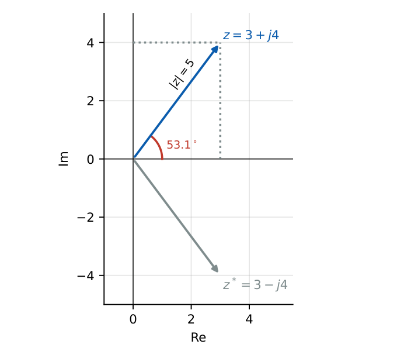
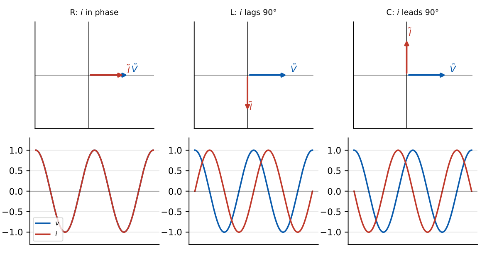
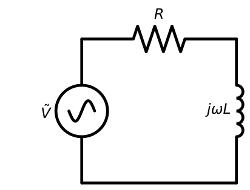
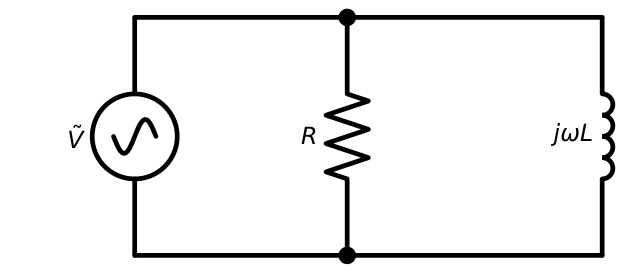
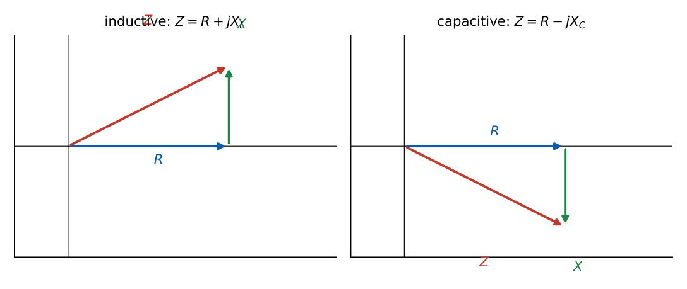

Sinusoidal Signals and Phasors
In this chapter
- 6.1 Sinusoidal waveform
- 6.2 Amplitude, frequency and phase
- 6.3 RMS and average values
- 6.4 Complex numbers
- 6.5 Rectangular and polar forms
- 6.6 Euler’s identity
- 6.7 Phasor representation
- 6.8 Phasor-domain circuit equations
- 6.9 Impedance and admittance
- 6.10 R, L and C in the phasor domain
- 6.11 Series and parallel AC circuits
Phasor conversion (sine vs cosine), RMS and average of standard waveforms, impedance of series/parallel combinations, phase lead/lag. Every AC question in the paper depends on these first steps being error-free.
6.1 Sinusoidal waveform
A sinusoidal voltage is \(v(t)=V_m\cos(\omega t+\phi)\), where \(V_m\) is the amplitude (peak), \(\omega=2\pi f\) the angular frequency (rad/s), \(f=1/T\) the frequency (Hz), and \(\phi\) the phase angle. \(\sin\theta=\cos(\theta-90^\circ)\), so a sine with phase \(\phi\) has cosine-phase \(\phi-90^\circ\).

6.2 Amplitude, frequency and phase
- Amplitude \(V_m\): maximum value; peak-to-peak \(=2V_m\).
- Frequency \(f=\omega/2\pi\), period \(T=1/f\).
- Phase \(\phi\): shifts the waveform along the time axis by \(\Delta t=-\phi/\omega\) (a positive \(\phi\) means the waveform is shifted to the left, i.e. it leads).
Two sinusoids of the same frequency can be compared: \(v_1\) leads \(v_2\) by \(\phi_1-\phi_2\) if that is positive. Sinusoids of different frequencies have no fixed phase relation.

6.3 RMS and average values
Average: \(V_{avg}=\dfrac1T\displaystyle\int_0^Tv(t)\,dt\). RMS: \(V_{rms}=\sqrt{\dfrac1T\displaystyle\int_0^Tv^2(t)\,dt}\).
Form factor \(=V_{rms}/V_{|avg|}\); crest (peak) factor \(=V_m/V_{rms}\).
The RMS value is the DC value that delivers the same average power in a resistor: \(P=V_{rms}^2/R\).
| Waveform (amplitude \(V_m\)) | Average | RMS | Form factor |
|---|---|---|---|
| Sine | \(0\) (\(2V_m/\pi\) for \(|v|\)) | \(V_m/\sqrt2\) | \(1.11\) |
| Half-wave rectified sine | \(V_m/\pi\) | \(V_m/2\) | \(1.57\) |
| Full-wave rectified sine | \(2V_m/\pi\) | \(V_m/\sqrt2\) | \(1.11\) |
| Square (\(\pm V_m\)) | \(0\) | \(V_m\) | \(1\) (for \(|v|\)) |
| Triangle (\(\pm V_m\)) | \(0\) (\(V_m/2\) for \(|v|\)) | \(V_m/\sqrt3\) | \(1.155\) |

For \(v=V_0+\sum_kV_{mk}\cos(k\omega_0t+\phi_k)\) (different harmonic frequencies): \(V_{rms}^2=V_0^2+\sum_k\dfrac{V_{mk}^2}{2}\). Cross-terms vanish only for different frequencies. Two sinusoids of the same frequency must be added as phasors first.
\(v(t)=3+4\sin\omega t\): \(V_{rms}=\sqrt{3^2+4^2/2}=\sqrt{17}=4.123\) V. The average is \(3\) V.
6.4 Complex numbers
\(z=x+jy\) with \(j^2=-1\). Modulus \(|z|=\sqrt{x^2+y^2}\), argument \(\theta=\tan^{-1}(y/x)\) (use the correct quadrant). Conjugate \(z^*=x-jy\). Operations: add/subtract in rectangular form; multiply/divide in polar form: \(z_1z_2=|z_1||z_2|\angle(\theta_1+\theta_2)\), \(z_1/z_2=|z_1|/|z_2|\angle(\theta_1-\theta_2)\).
6.5 Rectangular and polar forms

\(3+j4=5\angle53.13^\circ\). \(-3+j4=5\angle126.87^\circ\) (second quadrant, not \(-53.13^\circ\)). \(\dfrac{10\angle60^\circ}{2\angle15^\circ}=5\angle45^\circ=3.54+j3.54\).
6.6 Euler’s identity
\(e^{j\theta}=\cos\theta+j\sin\theta\). Hence \(\cos\theta=\Real\{e^{j\theta}\}=\tfrac12(e^{j\theta}+e^{-j\theta})\), \(\sin\theta=\tfrac1{2j}(e^{j\theta}-e^{-j\theta})\), and \(e^{j\pm\pi/2}=\pm j\), \(e^{j\pi}=-1\).
6.7 Phasor representation
Write \(v(t)=V_m\cos(\omega t+\phi)=\Real\{V_me^{j\phi}e^{j\omega t}\}\). The phasor is \(\tilde V=V_m\angle\phi\): the complex amplitude, with the common factor \(e^{j\omega t}\) suppressed. Use a cosine reference: a sine must first be converted, \(\sin(\omega t+\phi)\to\angle(\phi-90^\circ)\).
\(v=10\cos(\omega t-60^\circ)\to10\angle-60^\circ\). \(i=5\sin(\omega t+30^\circ)=5\cos(\omega t-60^\circ)\to5\angle-60^\circ\). Phasors \(\tilde V=8+j6=10\angle36.87^\circ\to v(t)=10\cos(\omega t+36.87^\circ)\).
A phasor is defined only for a fixed frequency and the peak amplitude is used above; if a problem states RMS values, the phasor magnitude is the RMS value and averages of products \(\tilde V\tilde I^*\) carry no factor \(\tfrac12\). Always state which convention you are using.
6.8 Phasor-domain circuit equations
Because \(\dfrac{d}{dt}\to j\omega\) and \(\int dt\to\dfrac1{j\omega}\), differential equations become algebraic. KCL and KVL hold for phasors: \(\sum\tilde I=0\), \(\sum\tilde V=0\).
6.9 Impedance and admittance
Impedance \(Z=\dfrac{\tilde V}{\tilde I}=R+jX\) (\(\Omega\)). Admittance \(Y=\dfrac1Z=G+jB\) (S). \(|Z|=\sqrt{R^2+X^2}\), \(\theta_Z=\tan^{-1}(X/R)\).
\(G=\dfrac{R}{R^2+X^2}\), \(B=-\dfrac{X}{R^2+X^2}\). Reactance \(X>0\) inductive, \(X<0\) capacitive.
6.10 R, L and C in the phasor domain
| Element | Impedance | Phase of \(\tilde I\) relative to \(\tilde V\) | Behaviour |
|---|---|---|---|
| \(R\) | \(R\) | \(0^\circ\) (in phase) | \(v=iR\) |
| \(L\) | \(j\omega L\) | lags by \(90^\circ\) | \(\omega\to0\): short; \(\omega\to\infty\): open |
| \(C\) | \(\dfrac1{j\omega C}=-\dfrac{j}{\omega C}\) | leads by \(90^\circ\) | \(\omega\to0\): open; \(\omega\to\infty\): short |

ELI the ICE man: in an inductor (\(L\)) current \(I\) lags voltage \(E\); in a capacitor (\(C\)) current leads voltage.
6.11 Series and parallel AC circuits
Series: \(Z_{eq}=\sum Z_k\). Parallel: \(Y_{eq}=\sum Y_k\). Voltage and current dividers hold with impedances: \(\tilde V_k=\tilde V\,Z_k/\sum Z\).



\(R=3\ \Omega\), \(\omega L=4\ \Omega\): \(Z=3+j4=5\angle53.13^\circ\ \Omega\). For \(\tilde V=10\angle0^\circ\) V (peak), \(\tilde I=2\angle-53.13^\circ\) A; the current lags by \(53.13^\circ\). \(\tilde V_R=6\angle-53.13^\circ\), \(\tilde V_L=8\angle36.87^\circ\); \(|\tilde V_R|^2+|\tilde V_L|^2=100\). ✓
\(Z_1=4+j3\), \(Z_2=4-j3\): \(Z_{eq}=\dfrac{Z_1Z_2}{Z_1+Z_2}=\dfrac{25}{8}=3.125\ \Omega\) (purely resistive).
\(R=4\ \Omega\parallel j4\ \Omega\): \(Z=\dfrac{j16}{4+j4}=\dfrac{j16(4-j4)}{32}=2+j2\ \Omega\).
Q1. The RMS value of \(v(t)=3+4\sin\omega t\) is (A) \(5\) (B) \(\sqrt{17}\) (C) \(7\) (D) \(3.5\).
Q2. The phasor (cosine reference) of \(i(t)=5\sin(\omega t+30^\circ)\) is (A) \(5\angle30^\circ\) (B) \(5\angle120^\circ\) (C) \(5\angle-60^\circ\) (D) \(5\angle-30^\circ\).
Q3. In a pure inductor, the current (A) leads voltage by \(90^\circ\) (B) lags voltage by \(90^\circ\) (C) is in phase (D) lags by \(180^\circ\).
Answers: Q1 (B). Q2 (C): \(\sin(x)=\cos(x-90^\circ)\). Q3 (B).
Q4. \(Z_1=4+j3\ \Omega\) and \(Z_2=4-j3\ \Omega\) are connected in parallel. The equivalent impedance is (A) \(3.125\ \Omega\) (B) \(8\ \Omega\) (C) \(2.5\ \Omega\) (D) \(4+j3\ \Omega\).
Q5. \(v=100\sin\omega t\) V drives \(R=10\ \Omega\) in series with \(X_L=10\ \Omega\). The current is (A) \(7.07\sin(\omega t-45^\circ)\) A (B) \(10\sin(\omega t-45^\circ)\) A (C) \(7.07\sin(\omega t+45^\circ)\) A (D) \(14.14\sin(\omega t)\) A.
Answers: Q4 (A). Q5 (A): \(|Z|=10\sqrt2\), \(I_m=100/14.14=7.07\) A, phase \(-45^\circ\).
Q6. A half-wave rectified sine of amplitude \(10\) V has an RMS value of V.
Q7. A series circuit has \(R=3\ \Omega\), \(X_L=8\ \Omega\), \(X_C=4\ \Omega\). The magnitude of the impedance is \(\Omega\).
Answers: Q6: \(V_m/2=5\) V. Q7: \(Z=3+j(8-4)=3+j4\), \(|Z|=5\ \Omega\).
Q8. Which of the following are true? (A) \(\sin\omega t\) and \(\cos\omega t\) have phasors \(1\angle-90^\circ\) and \(1\angle0^\circ\). (B) The impedance of an ideal capacitor decreases with frequency. (C) The RMS of a symmetric square wave equals its amplitude. (D) The average value of a full-cycle sine is \(V_m/\sqrt2\).
Answers: Q8: (A), (B), (C). (D) is false: the full-cycle average is \(0\).
(i) Forgetting to convert sine to cosine before writing the phasor. (ii) Wrong quadrant for \(\tan^{-1}\). (iii) Adding RMS values of different-frequency signals linearly instead of in quadrature. (iv) Confusing peak and RMS phasors. (v) Mixing up lead/lag: “current leads voltage in a capacitor”.
T1. \(v=20\cos(1000t+30^\circ)\) is applied to a \(10\) mH inductor. Find \(i(t)\).
T2. Find the RMS value of a full-wave rectified sine of peak \(10\) V and of a symmetric triangle of peak \(9\) V.
Answers: T1: \(X_L=1000\times0.01=10\ \Omega\); \(\tilde I=20\angle30^\circ/(10\angle90^\circ)=2\angle-60^\circ\), \(i=2\cos(1000t-60^\circ)\) A. T2: \(10/\sqrt2=7.07\) V; \(9/\sqrt3=5.196\) V.
- \(v=V_m\cos(\omega t+\phi)\leftrightarrow V_m\angle\phi\); \(\sin\to\angle-90^\circ\). \(\omega=2\pi f\).
- RMS: sine \(V_m/\sqrt2\); half-wave \(V_m/2\); full-wave \(V_m/\sqrt2\); square \(V_m\); triangle \(V_m/\sqrt3\). Averages: half-wave \(V_m/\pi\), full-wave \(2V_m/\pi\).
- DC + harmonics: \(V_{rms}^2=V_0^2+\sum V_k^2/2\).
- \(Z_R=R\), \(Z_L=j\omega L\), \(Z_C=1/j\omega C\). \(Y=1/Z\). Series \(Z\) adds, parallel \(Y\) adds.
- ELI the ICE man. Current lags voltage in inductive, leads in capacitive circuits.